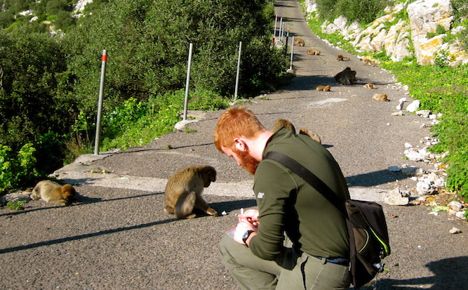

Much of my early research has taken place in the Upper Rock Nature Reserve of Gibraltar (now the Gibraltar Nature Reserve). The reserve covers 2.5-3 km of the middle and upper reaches of a Jurassic limestone uplift, called the Rock of Gibraltar or El Peñón, with the highest point in the reserve being approximately 424 meters above sea level. Of particular interest to my research are the animal species in the reserve, a few of which seem to be clearly benefiting from the anthropogenic environment: Barbary macaques (Macaca sylvanus), feral cats (Felis catus), the black rat (Rattus rattus alexandrinus) and feral goats (Capra hircus). Other medium to large mammals including the Spanish Ibex (Carpa pyrenaeica), the red fox (Vulpes vulpes silacea), the wild boar (Sus scrofa) and the small-spotted genet (Genetta genetta) all went extinct in the reserve area by the middle on the 20th century. This suggests that specific components of the anthropogenically altered environment may favor certain animals on the Rock. It is quite possible that pathogens and parasites transmitted to and from humans inhabiting Gibraltar may have played a role, and may still be playing a role in determining which animal species succeed on the Rock.
Interactions with humans have played a substantial role in the daily lives of the Gibraltar macaques for several generations, and these interactions heavily impact the social behavior and ecology of the macaques. Throughout this history of interactions, records on the impact of disease have also been kept. In the past century, the Barbary macaque population on the Rock has been afflicted with human diseases such as gastroenteritis and pneumonia, cases which are believed to reflect pathogen transmission from humans to macaques.
I began working on the Rock of Gibraltar in 2009 as part of a field primatology program through the University of Notre Dame. Under the guidance of Dr. Agustin Fuentes, I learned about many aspects of the feeding and behavioral ecology of the semi-free ranging macaques that inhabit the Rock. At the same time, I also began sampling the macaques for gastrointestinal parasites. I've since continued this, returning in 2010 and 2011, and I maintain strong relationships with a local conservation organization, GONHS, which runs the field station where I work.